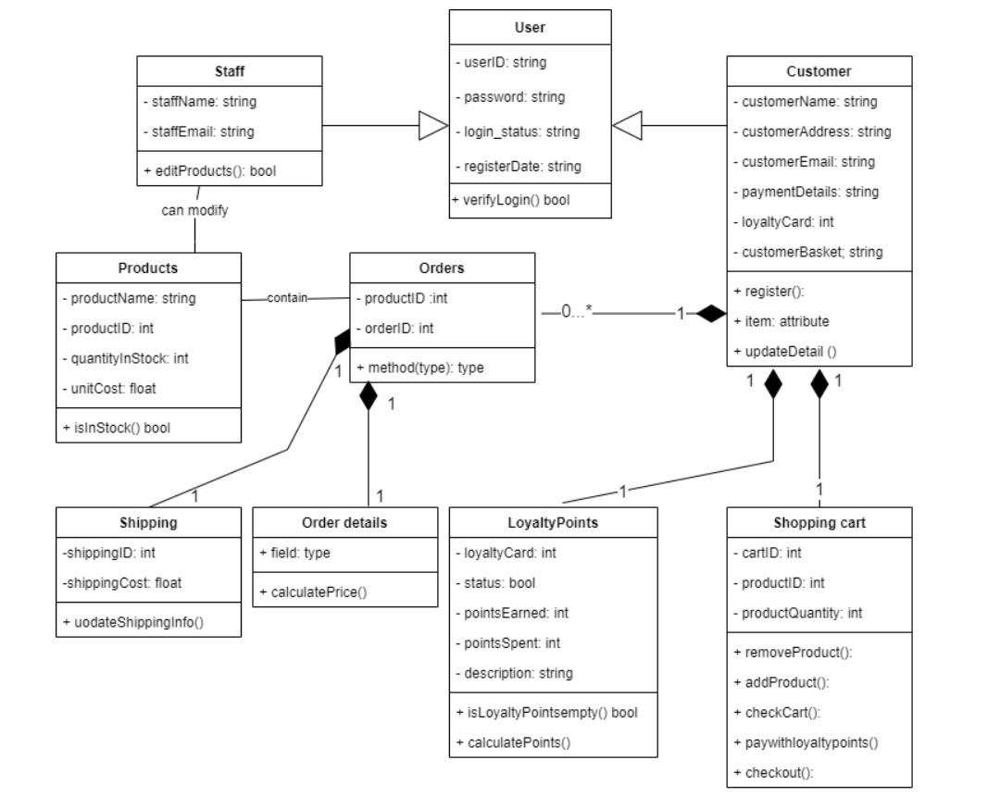

UML Class Diagram

Here is my attempt at a class diagram. It's for an online supermarket such as Ocardo. User is the superclass and takes staff and customer as sub classes which inherit attributes from the parents class such as UserID and password but also have their own specific attributes such as staff email or customer address. There are examples of composition in the diagram. Classes such as shopping cart could not exist without its parent class (Customer) this is marked in the diagram with a black diamond. If an instance of the customer class was destroyed, any instance of the shopping cart would be destroyed along with it. Along with this Multiplicity set numerical constraints on the relationships, it is demonstrated by the numbers next to the lines showing the relationships between the classes. For example between my customer class and their shopping cart there can only be one of each. However a single custom can have between zero and or any number above that as their number of orders, marked in the diagram as '0...*'. This diagram was drawn with the help of an UML class diagram tutorial (Lucidchart, 2017)
